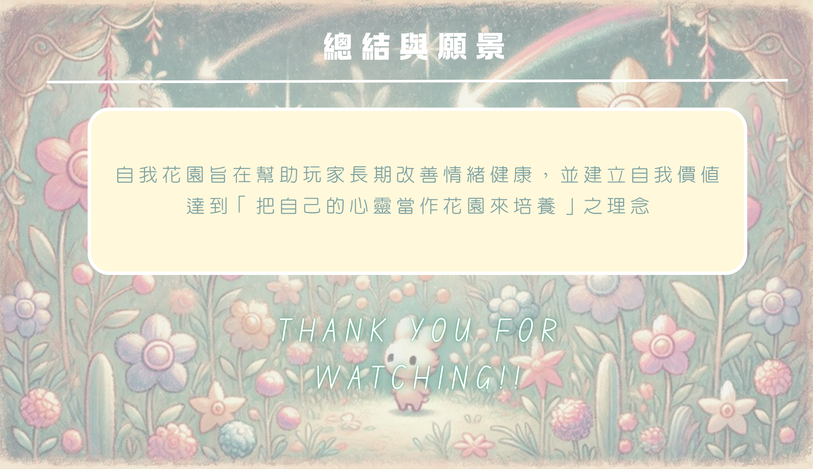

形式-日記APP企劃案
使用媒材Tools
- Canva簡報
- AI生成概念圖
負責項目responsible
- 完整企劃案
簡介Introduction
這其實是我大二的通識作業，但因為這個企劃收到不少好評，我也期望有一天能夠讓這個APP成真，故決定放出來展示。
老師的要求是:做一個讓人產生正向心理的APP。既然要產生正向心理，那提升內心的自我形象就不可或缺。
所以我就以寫日記提升自我認同為主軸，設計了這款APP。
透過種花寫日記，慢慢滋養名為「自我」的心靈花園。


完整圖集Gallery



觀眾回饋Reaction
- 1. 很完整的概念，但我並不是個擅長寫日記的人，希望能夠有除了文字之外的記錄方式
- 2. 我覺得概念很好，然後報告的口條也很清楚，如果有更清楚的使用介面一定更能讓大家認識
- 3. 企劃內容很具體，感覺如果做出來會很受歡迎，報告的很棒，講話有活力
- 4. 整個產品十分完整有趣，從一朵花到一個星球，從自我認識到自我成長，我覺得非常有趣而且我會十分想要用用看，特別是會根據日記的情緒來生成花朵，特別喜歡，而且可以讓人培養堅持寫日記的習慣，也能從花園的角度看到自己的成長，而且小兔子很可愛，後面也提到了有可能可以交換日記到別人的花園看看，真的是十分有特色的日記 app，整體報告十分流暢報告也是非常清晰。
- 5. 很喜歡「每個情緒都是一朵花，不需要去蹂躪任何一句話」也是一個助人自我覺察的好作品
- 6. 把日記跟養成遊戲合在一起，感覺很有趣，會想下載來玩看看
- 7. 這次的寫日記寫手帳 app 設計，我很喜歡，因為我也是一個很喜歡寫日記跟手帳的人，未來若有機會，我也想透過這個 app 來覺察自己的情緒！
- 8. 口條非常清晰，以經營自己的情緒在一個星球上的想法會讓人更想好好地生活，讓自己的星球很漂亮，心情也會很好！
- 9. 內容很完整，我很喜歡！從心情出發
- 10. 報告內容十分的詳細，用種花來紀錄的會讓人想要每天進去紀錄來培養自己的花園
- 11. 我覺得這份報告非常厲害，從概念開始到內部細節都解釋得非常仔細，這款日記 app 推出後應該能跟其餘同行競爭
- 12. 情緒垃圾桶 get
- 13. 整個系統很完整，有發展的空間
- 14. 內容好完整，脈絡清晰，介紹得很仔細
- 15. 簡報顏色內容都很可愛，講得也很流暢！很喜歡這種溫馨感
- 16. 很棒，報告和 PPT 非常詳細也很可愛，我很喜歡 💕
- 17. 報告架構非常完整，內容成果做得超仔細超厲害，功能很完整，圖很可愛，介紹得也很仔細
- 18. 整體都還滿完整的，而且有扣住心理學
- 19. 這個 app 是幫助大家覺察自己的情緒，透過寫日記培養心流，藉由種花來觀察自己的內心世界，讓你可以看到內心的成長！
- 20. 很詳細，還有結合寵物養成的感覺！能回顧自己的情緒顏色很棒